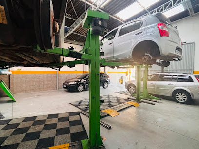
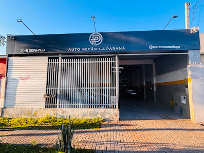
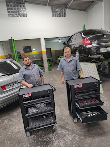
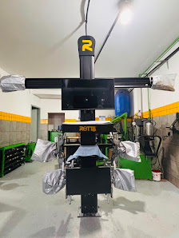

Mecânica geral
Avaliação e manutenção de componentes mecânicos do veículo.
Atendimento automotivo com foco em qualidade, transparência e cuidado em cada serviço.
07:30 às 18:30
Ver endereço e horários →A oficina é classificada no Google como oficina mecânica. Consulte a equipe para confirmar o serviço específico que seu carro precisa.
Avaliação e manutenção de componentes mecânicos do veículo.
Identificação cuidadosa da causa do problema antes do reparo.
Atendimento para falhas e vazamentos no sistema de arrefecimento.
Avaliação de ruídos, vazamentos e funcionamento dos sistemas.
* Os exemplos acima têm como base a categoria e relatos públicos no Google. Ligue para confirmar disponibilidade.


Localizada no bairro Hauer, a oficina reúne avaliações que destacam qualidade, honestidade, organização e preço justo.
★★★★★“Excelente, tudo 100%. Preço justo e qualidade no serviço.”
Jonathan Luiz Corrêa · Google
★★★★★“Serviço de qualidade, honestidade e preço justo.”
Fabiano Maffi · Google
★★★★★“Fiquei muito satisfeito com o serviço e atendimento na oficina mecânica.”
Izaguir Antonio Borges · Google


Entre em contato para explicar o que está acontecendo e confirmar o atendimento.